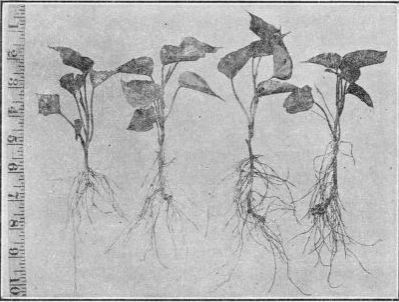
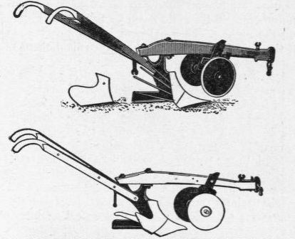
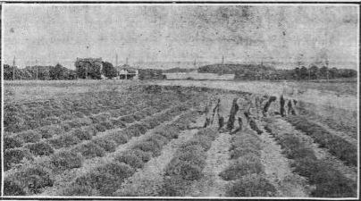

632. Fertilizing Sweet Potato
Description
This section is from the book "Vegetable Gardening", by Ralph L. Watts. Also available from Amazon: Vegetable Gardening.
632. Fertilizing Sweet Potato
A yield of 200 bushels an acre will require, for the tubers alone, 30 pounds of nitrogen, 10 pounds of phosphoric acid and 45 pounds of potash. While these figures indicate the need of rather large amounts of nitrogen, it is universally conceded that excessive applications of this clement produce too much vine growth at the expense of tuber development. It is also agreed that free applications, unless too liberal, will increase the yield, but the quality will be inferior. Nitrogen, however, must be used under most conditions, and it is probable that not less than 3 per cent will produce the best results, unless manure has been used or a leguminous cover crop has been plowed down. In the far South probably all of the nitrogen should be derived from organic sources, while in the North a portion should be in soluble mineral forms.
The mineral elements are much more important than nitrogen. They are essential to large yields of high quality, but potash is more important than phosphoric acid. The growers of the famous sweet potatoes at Vineland, New Jersey, use fertilizers carrying about 3 per cent of nitrogen, 7 per cent of phosphoric acid and 12 per cent of potash. Voorhees ("Fertilizers." p. 223) recommends, to the acre, 20 pounds of nitrogen, 50 pounds of phosphoric acid and 80 pounds of potash. At the Georgia Station (Ga. Sta. Bui. 25, p. 128) 320 pounds of acid phosphate, 360 pounds of cottonseed meal and 640 pounds of kainit an acre have given the best results. Beattie (U. S. D. A., Farmers' Bui. 324, p. 7) recommends a mixture composed of 200 pounds of high-grade sulphate of ammonia, 200 of dried blood or 300 of fish scrap, 1,200 of acid phosphate and 400 of muriate of potash. Applications of fertilizer vary from 200 to 1,000 or more pounds an acre, depending upon the condition of the land. The best results are obtained from dressings made from 10 days to three weeks before planting. When very large amounts of the mineral elements are employed, it is especially important to apply them well in advance of planting, because the tender plants are very susceptible to injury from burning.
Stable manures are sometimes used in sweet potato culture. They are most valuable on thin lands deficient in vegetable matter. It is better, however, to apply them to a hoed crop the previous year, but, if this cannot be done, they must be thoroughly rotted, to prevent excessive vine growth.
633. Planting
Field planting should not begin until the ground is thoroughly warm and there is no further danger of frost. The favorite time is before and after rains. If the ground is dry success is more certain when a small quantity of water is used with each plant than if the plants are set in the dry soil. If level culture is practiced the usual planting distance is 24 x 30 inches. When planted on ridges, a very general practice, the plants are usually spaced 14 to 18 inches apart in the rows, with 36 to 42 inches between rows. It is customary to plant from 8,000 to 12.000 plants an acre.
Fig. 103. sweet potato sets or drawings.
The plants should not be "drawn" until well rooted. (Figure 103.) To remove a plant from the tuber, hold the potato in place with one hand and pull with the other. The roots are often puddled before transplanting. This is especially valuable when conditions are not very favorable for the work. On small areas the plants are often set by hand, by the use of dibbers or trowels. In some sections, special tools known as tongs, shovels and dibbers are employed. (See Farmers' Bulletin 324, pp. 20 and 21, U. S. D. A.) Horse transplanting machines are often used in setting large areas.
Fig. 104. plows for harvesting sweet potatoes.
634. Cultivation
Cultivation should be started as soon as possible after planting. The loose soil in the alleys is gradually worked toward the rows, forming broad, flat ridges. Spike-tooth cultivators are then used as often as necessary, until vine growth prevents further tillage. Some hand hoeing is usually necessary, but this should be avoided as much as possible and should be reduced to a minimum when the plants are set in check rows.
635. Harvesting
Sweet potatoes are palatable as soon as they have attained a size large enough to be worth cooking, but the yield is always greatly sacrificed if dug too early. High prices may make up for the reduced yield. Various types of plows are used in the removal of the crop, but the special forms shown in Figure 104 are the most desirable for this work. Sweet potatoes should, if possible, be harvested before frost. It is also important that the ground be dry and the weather bright and sunny to favor the rapid drying of the tubers, which should never be left on the ground during the night. The usual plan is to allow them to dry in the field for a few hours and then haul them to temporary or permanent storage.
636. Marketing
Sweet potatoes are marketed most extensively in barrels. Hampers and baskets are often used for local markets. When shipped during the winter, the barrels should be lined with paper and the tops provided with several layers of heavy paper. Additional protection is afforded by covering the outside of the barrel with heavy paper. After being taken from storage in cold weather they should be handled as rapidly as possible until safely in the home of the consumer. Car lots in the winter require refrigerator or felt-lined cars. Stoves are sometimes provided to guard against frost.
637. Storage
A relatively high temperature and a dry atmosphere are the requisites for the successful storage of sweet potatoes, which in the South are usually kept in pits or outdoor cellars. In the North special houses (usually frame) are built and heated with stoves or hot water. They are well provided with ventilators. The potatoes are placed in large bins immediately after they have been dug; the fires are started as soon as storage begins, and a temperature of about 85 degrees maintained during the storing period and for 10 days after all the potatoes have been housed. This period is known as the "sweating" stage, after which the temperature is gradually lowered and maintained between 55 and 60 degrees. For a full discussion of storage, see Farmers' Bul. 324, pp. 29-34.
638. Returns
In the large commercial districts it is estimated (Farmers' Bulletin 324, p. 38) that the acre-cost of production is about as follows: Rental of land, $8; plowing and fitting, $5; fertilizers, $20; 10,000 plants, $10; planting, $5; cultivating, $5; digging and marketing, $25; total, $78. Average yield, one barrel to 100 hills or 100 barrels an acre. Prices range from $1.25 to $3 a barrel (sometimes more) and $75 is about the average profit to the acre, although $100 to $150 is sometimes realized.
Fig. 105. harvesting thyme.
639. Insects
The sweet potato has fewer insect enemies than many other vegetables. Cutworms are troublesome sometimes, especially in sod lands. The sweet potato borer, destructive to the roots of the plants, causes the greatest damage to the crop in the Gulf Coast States.
640. Diseases
Although there are several diseases that cause more or less trouble in the field or when the tubers are in storage, the black-rot (Sphaeronema fim briatutn) is the most destructive. This fungus attacks the young plants as well as the roots and tubers. Rotation and the planting of healthy tubers are the most important means of control. Bulletin 76 of the New Jersey Experiment Station gives complete descriptions, with illustrations of the most important diseases.
Continue to:
Tags
plants, crops, gardening, cultivated, harvesting, food ,greenhouses, fertiliser, vegitables